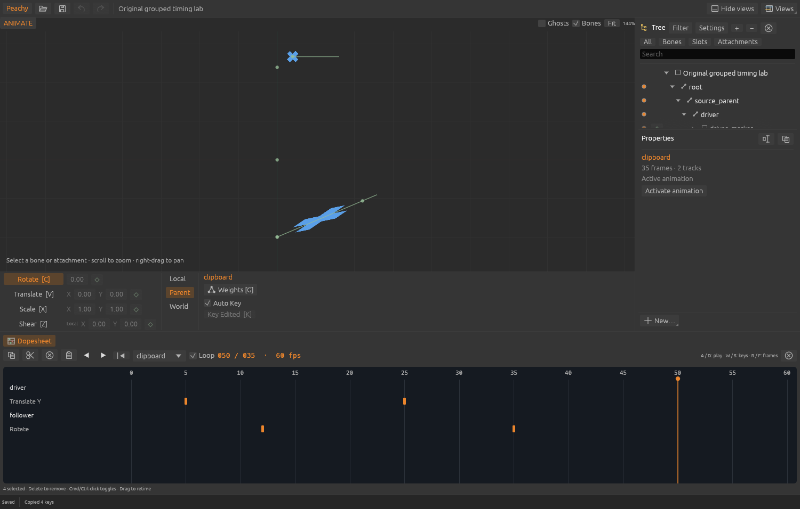
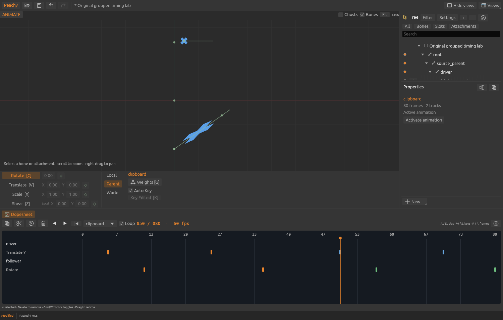
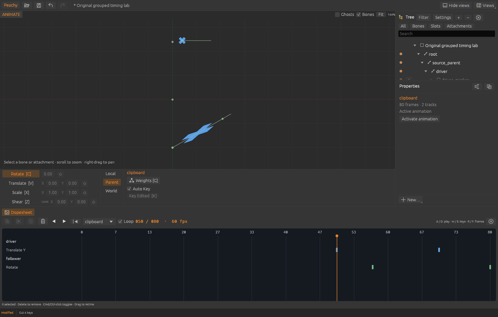
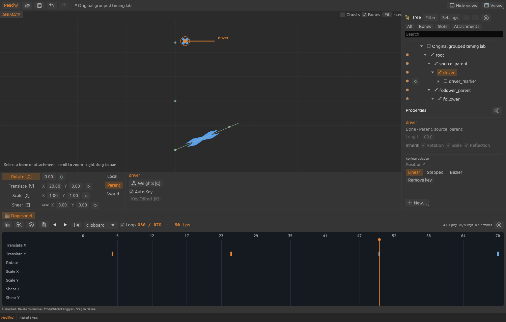

Before: four original keys, cursor 50
Native input + exact selection

Driver Translate Y at 5/25 and follower Rotate at 12/35 remain selected after ruler navigation to 50.
November 15, 2026 · native v23 · 64 commands /19 MCP tools. Native authoring passes; minimum window and persistence remain pending. These are actual Peachy native captures of original blue artwork. Installed Spine 4.3.26 captures remain private. Full workflow and pixel parity remain open.
Scalar results and hashes · Measured contract and limits · Original editable project · Portable explicit-map paste command
| Inspection | Verified outcome | Limit |
|---|---|---|
| Installed native reference | Global origin, original-owner fallback, measured two-parent mapping, cross-animation paste and retained original selection. | Black-box scalar observations; licensed reference UI stays private. |
| Peachy native input and exact state | Cmd toggles preserve time; ruler preserves selection; group and leaf Paste→Cut, original-owner routing, cross-animation and exact Undo/Redo. | Two Bone scalar owners; empty native pending baseline. Native authoring passes; minimum window and persistence remain pending. |
| Actual MCP stdio | 57 requests from blank root/one PNG; 25 construction commands, nine negative atomic cases, explicit other-target mapping, history/reopen and 12 poses. | Independent headless recreation; no finished rig imported as recipe input. |
| Focused source checks | Strict nested decoding, shared atomic preflight, identity remapping, lifecycle, modal clipboard routing and actual pointer regressions. | Test filters overlap; other owner families have no new native acceptance. |
| External runtime | 208 poses pass at 0.001; maximum world error 0.00001201 and region error 0.00001526. | Geometry agreement does not prove raster or authored interchange equality. |
Native two-other-bone automatic mapping needs general Tree multi-selection. MCP explicit maps reproduce that outcome now. No-Tree single-leaf fallback, Shift/Offset, Lock/Sync and broader workflows remain open.
Native input + exact selection

Driver Translate Y at 5/25 and follower Rotate at 12/35 remain selected after ruler navigation to 50.
Native input + exact document

Paste adds driver 50/70 and follower 57/80. The four original IDs and primary key stay selected; the four incoming IDs are diagnostics.
Native input + exact document/history

Cut removes the original selected keys. Only the pasted four remain. Two Undo operations restore the complete baseline.
Native input + exact document/history

The version 2 leaf clipboard retains its wire format. Paste preserves the original two selected Driver keys; Cut removes those originals.